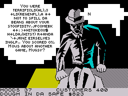

Bugs
- Saying "nope" locks up the machine
- Executing a sprite as code
- "Terrific" is not terminated
- SAY flags and the VM stream
- The game almost never ends on time
- Every ammo answer is a blunder
- The half-way contract check never fires
- Some numbers freeze the game
- A big kickback can cause a police raid
- Buying clients: the cost can overflow and pay you
- Control code 8 (backspace) crashes
- Exactly ten grand
Saying "nope" locks up the machine
When the game asks "Hows about another game, Mugsy?" and you answer "nope", the VM script sets the game status flag
to 1 (26730), the main loop returns (24606) and the start-up routine falls into
JR 24587 (24587),
a jump to itself with interrupts disabled. There is no exit message; the Spectrum has to be reset.
Executing a sprite as code
34135 prepares a masked, pre-shifted copy of a 32x32 sprite. It begins with
PUSH DE and then
POP HL / PUSH HL, which leaves the buffer address on the stack on top of the return address. When the shift
count is non-zero the routine ends with POP HL / RET and all is well, but when it is zero the
RET Z at 34164 pops the buffer address instead, so the CPU jumps into the sprite buffer (24192 or 24384) and
executes the graphic data as Z80 code.
It gets away with it by luck. The buffer contains rows of four graphic bytes followed by 255 (
RST 56, the
harmless ROM interrupt routine) and 0 (NOP), and the first sprite happens to contain conditional
returns (RET PO at 24195, RET M at 24234 and so on) that eventually pop the real return
address. This was confirmed in the simulator: every recorded game executes 24192-24234 and 24384-24405.
"Terrific" is not terminated
The last of the twelve rating words used by 26740, "terrific" at 53351, has no end code. It is the dictionary word
"terr" followed by the literal letters "FIC", and the next bytes are leftover assembler source text
(
LD (HL),3, LD (REGENFL),A ...), so the renderer carries on through the source,
including a stray control code 11 that repeats part of an unrelated message, until it happens to reach an end marker.
From the script, rating 12 is chosen for a score of 100% (score/10+2 = 12). It is also chosen for a score of 0% or
less: in that case the script jumps from 26688 straight to 26714, skipping the calculation of v33, so 26740 works
with a stale value of v33 (a multiple of 1.00 between -0.10 and 10.00). Its low byte is never 1-11, so the 12th word is
picked. In other words, the very worst players are told that they were "terrific", followed by garbage. This was
confirmed by running the real Z80 code with a 0% score:

SAY flags and the VM stream
Message control codes 1, 4 and 5 fetch their operands from the VM byte stream, not from the message. A
message that contains a random choice (control code 10) whose alternatives used different numbers of placeholders
would therefore make the VM lose its place. The game is careful to avoid this: the only such message (52074) uses
one variable in each alternative.
The game almost never ends on time
The length of the game is chosen at the start (33937): v36 = 7 + 4U, where U is a random number
between 0 and 1.00 in steps of 0.01. The result (7.00 to 11.00 in steps of 0.04) is never rounded, but the script ends
the game on time only when IFEQ v36,v6 at 25020 finds it equal to the year number, which needs a whole number. That
happens with probability 12/256 (under 5%). In every other game there is no time limit at all: the game goes on until
Mugsy is killed, cousin Abe moves in, the mob walks out, Nick the Greek takes over or the safe is empty.
Because the random number generator depends only on the contents of memory, the first game after loading always gets
v36 = 10.60, so the first game can never end on time. Running the real Z80 code in a simulator with the hit man
always beaten, a game was still going in year 19.
This has a large effect on the score: the end-of-game calculation charges 3 points for each year short of v36 (at
most 4), but there is no limit in the other direction, so every year survived beyond v36 is worth 3 points. See the
economics page.
Every ammo answer is a blunder
After asking how much to spend on artillery and ammo, the script at 25641 (which handles answers above the number of hoods) first counts a blunder for anything under twice the number of hoods ("Yeah, Boss, keep'em scared, eh!"). Anything from twice the hoods upwards should then be accepted if it is under five times the number of hoods, and scolded ("Cripes, Boss, they could fight a war with the hardware that'll buy.") if it is more. The second test is written IFGT v3,v23 (hoods > ammo) instead of
IFGT v33,v23 (5*hoods > ammo); since the ammo is already known to be at least twice the hoods, it can never succeed,
so there is no answer that Louey accepts without counting a blunder.
The consequences are serious. The blunder count v11 is only reset when it exceeds 2, so with one blunder a year it
runs 1, 2, 3, 1, 2, 3... and the hit man from Detroit is sent every third year whatever you do. The total blunder count
(which is deducted from the final score) grows by the running count each year, i.e. by 2 points a year.
The half-way contract check never fires
Some numbers freeze the game
The square root routine (30511) uses Newton's method on the fixed-point numbers and stops when an estimate equals the
previous one. For some numbers the estimates alternate between two values for ever. Checking every whole number up to
20,000, this happens for 156, 1407, 2499, 2501, 3905, 7658, 9998, 10,002, 12,654 and 18,909.
At the end of each year the script takes the square root of the number of hoods and of ammo + kickback. So if you
spend, say, 100 grand on ammo and 56 on the kickback, or if your mob happens to number exactly 156 hoods at the end of
a year, the Spectrum hangs. The routine was tested directly in the simulator for every value from 0 to 399.99, and the
ammo + kickback case was reproduced in a full game.
A big kickback can cause a police raid
The INT operation (30580) shares the sign handling of the multiply and divide routines, which work out the sign of
the result from the signs of both operands. INT only has one operand, so its result has the wrong sign whenever
the second register (BC'DE') happens to hold a negative number. In the raid calculation at 26163-26174 the last value
added is (next year's takings - 8*kickback)/(10 - price - blunders), which is negative when the kickback is large. If
the total is also negative (meaning no raid), INT turns it into a positive number, and the cops raid you anyway.
Buying clients: the cost can overflow and pay you
When you buy clients from the syndicate the script (25380-25402) works out the cost as n times the price with the VM's MUL, stores it, subtracts it from the safe and accepts the purchase if what is left is zero or more. All of these are signed 32-bit counts of hundredths, and nothing checks for overflow. So if the cost comes out above 21,474,836.48 grand it wraps round to a negative number, the "left in the safe" figure goes up instead of down, and the game cheerfully says nothing about it. With a price of P grand per client, any number of clients n for which n × P lies between 21,474,837 and 42,949,672 does it (the answer line has room for ten digits, so numbers up to 21,474,836 can be typed): you receive n clients and a cheque for 42,949,672.96 − n × P grand.
Checked on the real Z80 code in the simulator: in year 1 with the price at 18 grand, answering 2,000,000 to "How many do we buy from the syndicate this year?" took the safe from 675 grand to 6,950,348 grand and the client count from 400 to 2,000,400. Using the formula to aim for a cheque of exactly 1,000,000 grand (2,330,537 clients at 18 grand) left 1,000,680 grand in the safe, the 675 from before plus the cheque, give or take the rounding of the client count. (Aim for a cost that wraps to about −1,000,000,000 hundredths, i.e. n × P ≈ 32,950,000; if the cost wraps to nearly −21 million grand the sum of that and your old balance overflows again and the game rejects the purchase.)
What it is worth is another matter. Money plays no part in the final score and most of the score terms are capped (see the economics page), so a few million clients and a few million grand do not buy a higher score by themselves. In simulations of the strategies from the economics page with a year-1 overflow purchase the games ended after about three years, with death scores of roughly 40-50, and the 12-year average came out lower than without it (35-41 against 50). A coordinate search over the strategy parameters and the size of the windfall (tools/exploit_refine.py, 12-year games, 80 seeds), starting from the optimised strategy, found no windfall that beat not taking one.
Tracing those games shows why, and it is three separate traps. (1) The windfall is a fortune in the safe, and the optimised strategy's kickback (about 74% of what is left) then comes to hundreds of thousands of grand, which sets off the INT sign bug (see A big kickback can cause a police raid): in the traced game a kickback of 739,478 grand produced a raid of 1,276,281, the safe was emptied to the 10-grand floor, the next year's ammo was 9 grand, and the formula for the number rubbed out (hoods²/(2×ammo+1) plus the blunder term) killed 37 of the 40 hoods. (2) With the kickback held to just under an eighth of next year's takings (the point at which the sign bug starts), so that the bug is avoided, and almost all the cash spent on ammo, the hoods stop dying, but they also stop being recruited: the recruiting formula multiplies the number of clients by itself, and with millions of clients the product wraps round the 21,474,836.47 limit, so the number of recruits comes out as zero or less every year (the mob stayed at exactly 40 for the first eight years of the test game). (3) Each overflow purchase adds a couple of million clients, and at about 21 million clients the client count itself wraps negative (year 8 in the test), after which the ammo and recruiting arithmetic produces nonsense and the mob is cut down (26 of 40 hoods in the year after, in the test game). Buying every year with this sensible spending gave games of about eleven years but an average score of only 33 (20 games each), against 48-54 for honest play (tools/exploit_rich.py).
Two side notes from the same experiments. Selling clients to the syndicate pays the price per client in full, so a player with two million clients can sell half of them for about 18.8 million grand in the next year (selling all of them was turned down); the money is real but, again, worthless for the score. And negative numbers do not work as a loophole: a negative answer to the handout, ammo, squeeze, kickback or buy question is simply turned down and asked again. Only the buying and selling questions multiply your answer by something, which is why only they can overflow.
Control code 8 (backspace) crashes
Message control code 8 was meant to be a backspace, but its handler (29897) begins with a stray
PUSH HL that nothing pops. The dispatcher (29544) has just put the handler's own address in HL, so the final RET returns to the start of the handler, which runs a second time and then returns to 23807, one byte before the text buffer, and runs whatever it finds there as code. Run in the simulator on a message containing code 8, the buffer pointer dropped by two and the routine never returned. None of the messages decoded from the script uses code 8, so the game never triggers it.
Exactly ten grand
After repaying Nick the Greek, the script at 24970 says "So ya aint got the dough ta buy rods and bullets so da boys can
defend theirselves. Sorry, Boss,- you're goin' for a ride." and ends the game if what is left is exactly 10 grand (IFNE
v69,v33). Presumably "less than 10 grand" was intended; with 9 grand left you are fine.